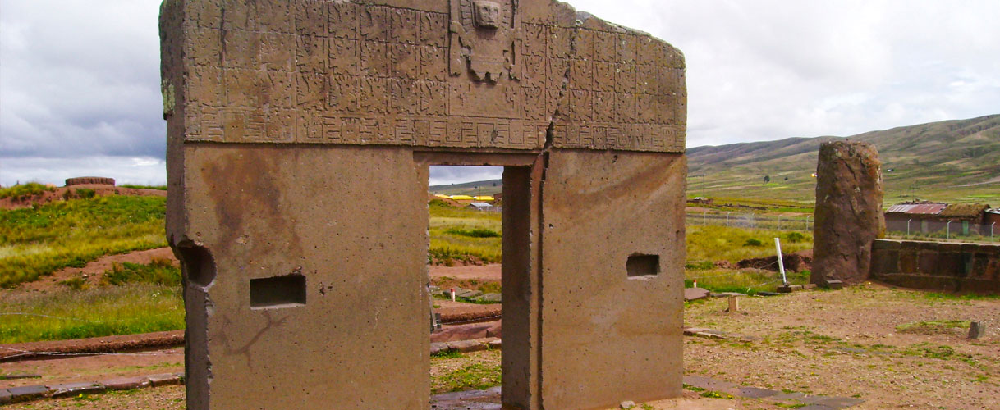

Tiwanaku

Turismo en Tiwanaku
Tiwanaku o Tiahuanaco es el sitio arqueológico más importante de Bolivia, está situado en la provincia Ingavi del
departamento de La Paz, a 70 km de la ciudad, se presume que la cultura Tiahuanacota nació entre 1500 y 1400 años a.C.,
y colapsó por causas desconocidas alrededor del año 1100 a 1200 d.C.
Habría sido fundada alrededor del 300 d.C. y ciertas edificaciones quedaron sin terminar hacia el 900 d.C. Se ha
establecido la división de la cultura de Tiwanaku en 3 fases:
Aldeano, del 1580 A.C. - 133 D.C.
Urbano, del 133 D.C. - 374 D.C.
Clásico, del 374 D.C. - 900 D.C.
Expansivo, del 900 D.C. - 1200 D.C.
Respecto a sus conocimientos y tecnología se caracterizaron por haber conocido el bronce, lo que le dio una gran ventaja
tecnológica y militar respecto a las otras culturas contemporáneas de América.
La influencia de Tiwanaku en Sud América se advierte en monumentos de Perú (cultura Inca), Ecuador, Chile, Argentina y
en el oriente amazónico de Bolivia. Algunos estudiosos la propusieron como la cultura madre de las civilizaciones
americanas, mientras que otros la consideraban como la capital de un antiguo imperio megalítico. Para el investigador
inglés James Allen, Tiwanaku fue uno de los reinos de la Atlántida de Platón.
Entre sus construcciones arquitectónicas más importantes están:
Templete Semisubterráneo: Es una de las mejores piezas arquitectónicas de Tiwanaku, fue construido dos metros por debajo
del nivel de su área circundante, con una planta cuadrangular rodeada por muros con 57 pilares de arenisca roja.
Empotrada en el piso del templete se hallaba la mayor pieza antropomorfa, conocida como Monolito Pachamama o Monolito
Benett, es el más grande de todo Tiwanaku, mide 7.30 metros de alto y, así como muchas de las piezas del sitio fue
tallado en un solo bloque de forma rectangular.
Kalasasaya: Entre los templos, el de mayor impacto es el de Kalasasaya o “De las Piedras Paradas”, es una estructura de
dos hectáreas basada en columnas de arenisca con gárgolas decorativas o goteros de desagüe para las aguas de lluvia. Es
un centro ceremonial construido con grandes piedras de cinco metros de altura, mide 126 metros de largo y 117 metros de
ancho.
Pirámide de Akapana: Pirámide aun cubierta en un 90%. Edificio clave y emblemático del centro cívico de Tiwanaku,
dispuesto en relación con los astros. Es un edificio de estructura piramidal con siete plataformas escalonadas, tiene 18
metros de altura y 200 metros por lado en la base.
Puerta del Sol: El monumento más famosos e importante de Tiwanaku, se encuentra en Kalasasaya, está cincelado en un solo
bloque de piedra andesita de diez toneladas, cuenta con 3 metros de alto y casi 4 metros de ancho, y se presume fue
parte de una edificación mayor. En sus bajorrelieves se muestra la cosmovisión de la cultura de Tiwanaku con la imagen
del dios Sol sosteniendo en cada mano un cetro con figuras de aves y rayos, cuenta con treinta y dos figuras de hombres
- sol y dieciséis de hombres – águila, este lenguaje jeroglífico y códices hasta el momento no han sido revelados; sin
embargo algunos estudiosos suponen que podría ser un calendario anual que marca los tiempos de siembra y cosechas.
Puma Punku: Edificación totalmente cubierta, sin embargo las investigaciones arqueológicas denotan que tiene una técnica
mucho más depurada y evolucionada que el de otras construcciones, destacando el impecable manejo del material lítico.
Puma Punku o La Puerta del Puma es un templo con extraordinaria calidad arquitectónica que cubre un área aproximada de
dos hectáreas.
Ubicación: Población del oeste de Bolivia, en la provincia Ingavi del departamento de La Paz, a 72 km de Nuestra Señora
de La Paz (sede de gobierno).